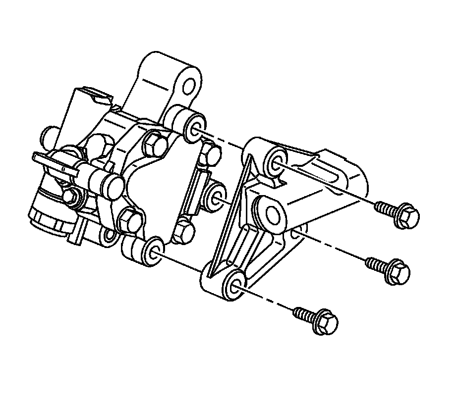

Power Steering Pump Bracket Replacement
Power Steering Pump Bracket Replacement (LH2 - Gas, 8 Cylinder, 4.6L, SFI, V8, DOHC, HO)
Removal Procedure
1. Remove the power steering pump. Refer to Power Steering Pump Replacement (LY7 - Gas, 6 Cylinder, 3.6L, SFI, V6) (Service and Repair)Power Steering Pump Replacement (LH2 - Gas, 8 Cylinder, 4.6L, SFI, V8, DOHC, HO) (Service and Repair) .

2. Remove the power steering pump bracket bolts.
3. Separate the power steering pump from the power steering pump bracket.
Installation Procedure
1. Align the power steering pump to the power steering pump bracket.
Notice: Refer to Fastener Notice (Fastener Notice) .
2. Install the power steering pump bracket bolts.
Tighten the bolts to 25 N.m (18 lb ft).
3. Install the power steering pump. Refer to Power Steering Pump Replacement (LY7 - Gas, 6 Cylinder, 3.6L, SFI, V6) (Service and Repair)Power Steering Pump Replacement (LH2 - Gas, 8 Cylinder, 4.6L, SFI, V8, DOHC, HO) (Service and Repair) .